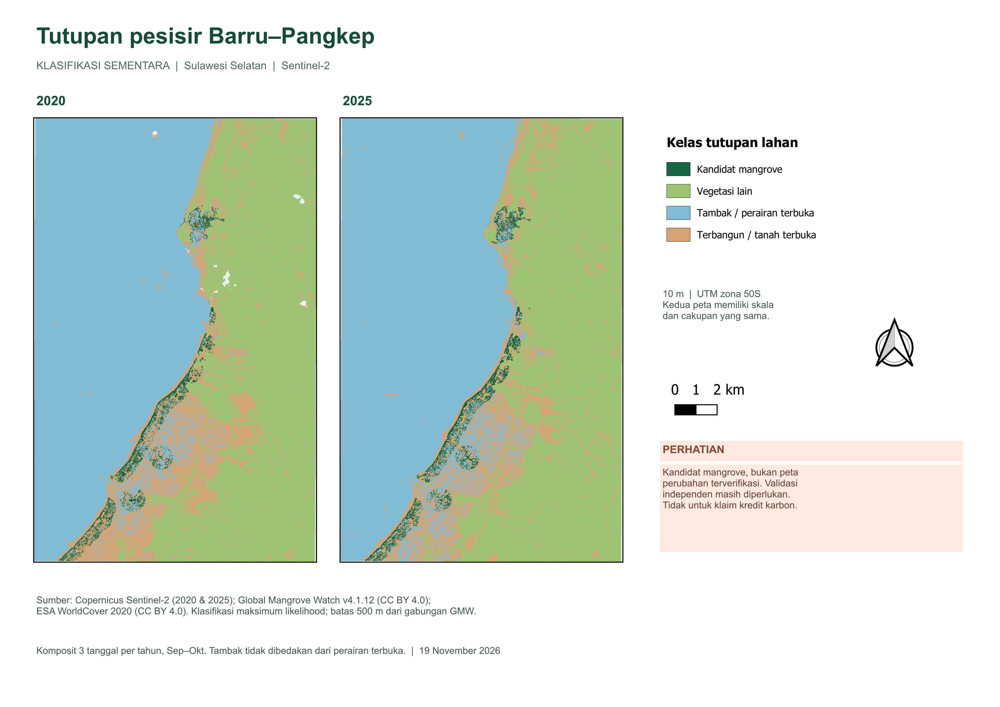

Perbandingan klasifikasi sementara Sentinel-2 tahun 2020 dan 2025 di wilayah pesisir Sulawesi Selatan. Ini perbandingan dua klasifikasi eksploratif, bukan peta kehilangan/kenaikan mangrove tervalidasi dan bukan inventaris karbon.
Portofolio
Tugas ini mengembangkan alur kerja pengolahan Sentinel-2 untuk mengidentifikasi kandidat mangrove dan kelas tutupan lahan pesisir. Hasil dua tahun ditampilkan pada skala dan batas wilayah yang sama. Klasifikasi ini bersifat eksploratif dan masih memerlukan referensi independen sebelum digunakan untuk menghitung perubahan atau estimasi karbon.

Memuat data peta…
Data GeoJSON ±20–22 MB per tahun. Proses ini hanya dilakukan sekali.
Transparansi
Semua langkah metodologi ditampilkan secara transparan. Klasifikasi ini bersifat eksploratif. Keterbatasan berikut harus dipahami sebelum menafsirkan peta.
Transparansi Data
Semua sumber data yang digunakan dalam analisis ini dicantumkan di bawah. Hanya data berlisensi terbuka yang diikutsertakan dalam repositori publik.
Citra multispektral 2020 dan 2025 untuk area studi. Komposit median tiga tanggal per tahun.
"Contains modified Copernicus Sentinel data 2020 and 2025"
Bebas & TerbukaDigunakan sebagai label awal dan zona pembatasan 500 m. Tahun 2020 dan 2025. Bunting dkk. / Aberystwyth University, JAXA, UNEP-WCMC.
CC BY 4.0Digunakan sebagai referensi kelas nonmangrove untuk tahun 2020 dan 2025. European Space Agency.
CC BY 4.0Referensi mangrove 2021 (dari SPOT 6/7 2019–2020 dan Sentinel-2 2020). Hanya digunakan untuk pemeriksaan parsial; tidak disertakan dalam repositori publik karena lisensi tidak dinyatakan secara eksplisit.
Tidak diunggahLibrary peta interaktif berbasis WebGL. Versi 4.7.1.
BSD 3-ClauseTidak digunakan. Peta menggunakan latar belakang polos untuk menghindari kebutuhan token API atau risiko pelanggaran syarat layanan. Ini memastikan peta tetap dapat dibaca sepenuhnya secara offline.
N/AUnduhan
File berikut tersedia untuk diunduh. Data bersifat sementara — gunakan dengan mempertimbangkan keterbatasan yang dijelaskan di bagian Metode.
Peta klasifikasi sementara 2020 & 2025, format A4 lanskap, siap cetak.
Arsip berisi SHP 2020/2025 (shp, shx, dbf, prj), QML QGIS, dan GeoTIFF sumber.